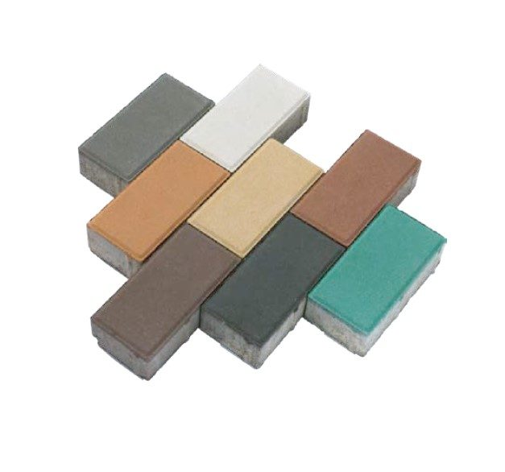
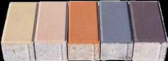
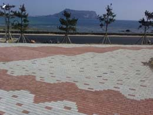
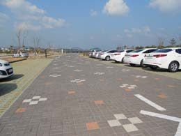
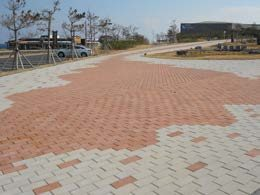
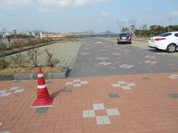
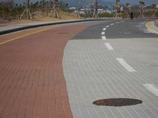
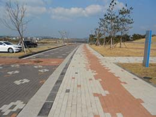

보도블록 · 인터록블록 · 투수블록
제주 인터록블록 — 대덕에코 인터로킹블록 I형
직사각형(200×100mm) 인터로킹 블록. 60mm는 인도용, 80mm는 도로용입니다.

- 제품명
- 인터로킹블록 I형
- 제조원
- (주)대덕에코
- 판매·공급원
- (주)아인산업안전
- 판매지역
- 제주특별자치도
인터로킹블록 I형 규격
제조사 자료 기준입니다.
| 규격 | 200×100×60mm (인도용) · 200×100×80mm (도로용) |
|---|---|
| m²당 수량 | 50개 |
| m²당 중량 | 130kg (60mm) · 175kg (80mm) |
| 휨강도 | 5.0MPa |
| 타입 | 불투수 · 투수 |
| 색상 | 화이트 · 그레이 · 블랙 · 아이보리 · 오렌지 · 브라운 · 황색 · 녹색 · 빨강 |
특징
- 제조사 설명: 마모·동결이 없고 대형 차량 통행이 가능합니다.
- 제조사 설명: 서로 맞물리는 결합식으로 포장면의 뒤틀림이 없습니다.
- 무늬와 패턴을 바꿔 다양한 바닥 디자인이 가능합니다.
인터로킹블록 I형 제품 · 시공 예시 사진
(주)대덕에코 카탈로그 사진입니다. 시공 예시는 제조사 자료이며 제주안전시설의 시공 실적이 아닙니다.







카탈로그 색상과 실제 제품은 다소 차이가 있을 수 있습니다.
제주도 납품 안내
- 판매지역 — 제주특별자치도 전 지역(제주시·서귀포시·읍면) 현장으로 납품합니다. 제주도 밖으로는 판매하지 않습니다.
- 주문 방법 — 전화(1660-4019) 또는 견적문의로 규격·수량·납품지를 알려주세요. 이 사이트에서는 결제를 받지 않습니다.
- 가격·배송 — 수량과 납품지, 하차 조건에 따라 견적으로 안내합니다. 세금계산서 발행이 가능합니다.
- 시공이 필요하면 — 경계석·안전시설 설치가 함께 필요하면 안전시설 시공까지 한 번에 견적을 드립니다.


자주 묻는 질문
제주에서 인터로킹블록 I형을(를) 살 수 있나요?
네. (주)아인산업안전이 운영하는 제주안전시설에서 제주특별자치도 내 현장으로 판매·납품합니다. 필요한 규격과 수량, 납품지를 알려주시면 견적을 드립니다. 전화 1660-4019. 현재 쇼핑몰에는 품절로 표시되어 있어 재입고 일정을 함께 안내합니다.
인터로킹블록 I형 규격은 어떻게 되나요?
규격: 200×100×60mm (인도용) · 200×100×80mm (도로용) / m²당 수량: 50개 / m²당 중량: 130kg (60mm) · 175kg (80mm) / 휨강도: 5.0MPa / 타입: 불투수 · 투수 / 색상: 화이트 · 그레이 · 블랙 · 아이보리 · 오렌지 · 브라운 · 황색 · 녹색 · 빨강.
인터로킹블록 I형은(는) 어느 회사 제품인가요?
제조원은 (주)대덕에코입니다. 제주시 조천읍에 공장을 둔 보강토옹벽·친환경 콘크리트 자재 생산업체입니다. 판매·공급원은 (주)아인산업안전입니다.
가격은 얼마인가요?
수량과 납품지(제주도 내), 하차 조건에 따라 달라져 견적으로 안내합니다. 세금계산서 발행이 가능합니다.